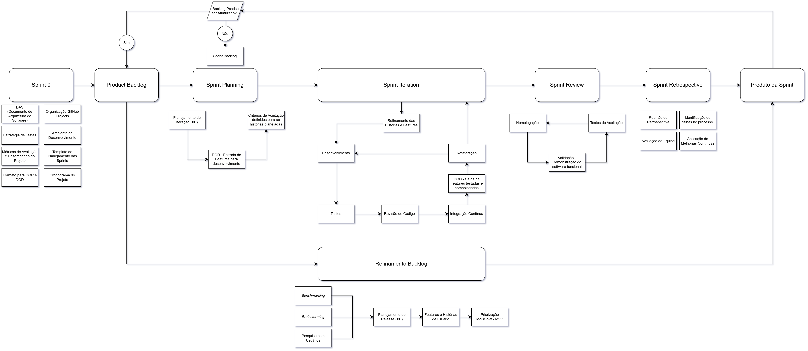

Metodologia de Desenvolvimento¶
1. Abordagem adotada¶
O desenvolvimento da plataforma adota uma abordagem híbrida Scrum + XP (Extreme Programming). O Scrum organiza o trabalho em sprints, com planejamento, acompanhamento do backlog, revisão do incremento e retrospectiva. O XP complementa esse fluxo com planejamento de releases e práticas técnicas de desenvolvimento, como programação em pares, testes, revisão de código, integração contínua e refatoração.
A metodologia é aplicada pela dupla responsável pelo projeto. Os registros identificam os dois autores como participantes das sprints e registram contribuições do orientador, de stakeholders e de usuários como fontes de feedback.
2. Planejamento e priorização do produto¶
O planejamento começa com a coleta de informações por benchmarking, brainstorming e pesquisa com usuários. Essas entradas apoiam o planejamento de release em XP e a definição de features e histórias de usuário. As features são priorizadas pela técnica MoSCoW e organizadas em MVPs, conforme os critérios de valor de negócio, viabilidade e facilidade de implementação descritos no documento de requisitos.
As histórias priorizadas compõem o Product Backlog, mantido no GitHub Projects. O backlog é refinado continuamente: após a entrega de cada incremento, a equipe avalia se ele precisa de atualização antes de iniciar um novo ciclo. Novas informações, feedback e mudanças de prioridade podem levar à revisão das histórias e do escopo dos MVPs.
3. Ciclo de desenvolvimento¶
O fluxo adotado, representado no diagrama da metodologia, é:

- Sprint 0 — preparação: definição da arquitetura, dos requisitos, das features e dos MVPs; elaboração das estratégias de teste e dos critérios de pronto e concluído; e preparação do ambiente de desenvolvimento.
- Sprint Planning: seleção de histórias do Product Backlog para compor o Sprint Backlog, definição do objetivo da sprint e verificação de que as histórias atendem à Definition of Ready (DoR).
- Sprint Iteration: refinamento das histórias e features selecionadas e execução do desenvolvimento. A equipe implementa as histórias, realiza testes e revisão de código, executa a integração contínua e refatora quando necessário. Falhas encontradas retornam ao desenvolvimento e à validação até que os critérios de conclusão sejam atendidos.
- Homologação e testes de aceitação: demonstração do software funcional, execução dos testes de aceitação e verificação dos critérios de aceitação. Histórias atendidas são homologadas como parte do incremento da sprint.
- Sprint Review: apresentação do incremento e coleta de feedback do orientador, de stakeholders e, quando aplicável, de usuários.
- Sprint Retrospective: avaliação do processo de trabalho, identificação de dificuldades e definição de ações de melhoria contínua para as próximas sprints.
- Refinamento do backlog: atualização do Product Backlog com os resultados da sprint e os feedbacks recebidos, iniciando o próximo ciclo.
Abaixo segue a representação do diagrama

A Sprint 0 é dedicada à preparação do projeto. As sprints seguintes têm duração aproximada de duas semanas, conforme os cronogramas planejado e executado. O objetivo da sprint e as histórias selecionadas são registrados no respectivo relatório de sprint.
4. Práticas de desenvolvimento e qualidade¶
Durante a Sprint Iteration, a equipe aplica as práticas de XP documentadas para manter a qualidade do incremento:
- Programação em pares e revisão de código: revisão do trabalho antes de sua conclusão.
- Testes: análise estática e verificação de tipos, testes unitários, de integração e de ponta a ponta, conforme a estratégia de testes.
- Integração contínua: execução das verificações automatizadas a cada integração.
- Refatoração: melhoria interna do código, seguida da repetição das verificações pertinentes.
- Testes de aceitação e homologação: validação das histórias contra os critérios definidos e demonstração do software funcional.
4.1 Definition of Ready (DoR)¶
Uma história está pronta para ser planejada quando:
- está descrita no formato “Como / Quero / Para”;
- tem critérios de aceitação definidos e compreendidos pela equipe;
- foi refinada tecnicamente, com tarefas ou pequenos lotes de trabalho identificados; e
- não possui impedimentos técnicos nem dependências pendentes.
4.2 Definition of Done (DoD)¶
Uma história só é movida para Validado quando todos os itens abaixo forem atendidos:
- código implementado e revisado por programação em pares ou revisão de código;
- testes unitários escritos e aprovados, com cobertura mínima de 80%;
- integração contínua executada sem falhas;
- todos os critérios de aceitação atendidos; e
- ausência de regressões em funcionalidades existentes.
A conformidade com a DoR e a DoD é registrada como checklist. A transição de etapa requer 100% dos itens aplicáveis concluídos, de acordo com o plano de métricas e acompanhamento.
5. Acompanhamento e melhoria contínua¶
O GitHub Projects é a fonte de acompanhamento do fluxo de trabalho, com os estados A fazer, Em desenvolvimento e Validado. A equipe acompanha a vazão — histórias ou features que chegam a Validado por sprint —, o progresso acumulado do MVP e os defeitos registrados como issues.
Na aplicação de Yesterday's Weather, prática de XP, a vazão realizada na sprint anterior orienta a capacidade inicial planejada para a seguinte. Com mais histórico, o plano de métricas recomenda usar a média das duas ou três sprints mais recentes. As retrospectivas analisam desvios, impedimentos e tendências de defeitos e definem ações para ajustar o processo.
6. Referências do processo¶
- Requisitos, priorização MoSCoW e MVPs
- Plano de métricas e acompanhamento do projeto
- Estratégia de garantia da qualidade e testes
- Modelo de relatório de sprint
Histórico de Revisão¶
O histórico registra as modificações formais realizadas neste documento, garantindo o controle de versão e a rastreabilidade das decisões sobre a metodologia de desenvolvimento.
| Data | Versão | Descrição | Autores |
|---|---|---|---|
| 02/Nov/2026 | 1.0 | Documentação da metodologia de desenvolvimento Scrum + XP | J. P. Morbeck e P. H. Melo |